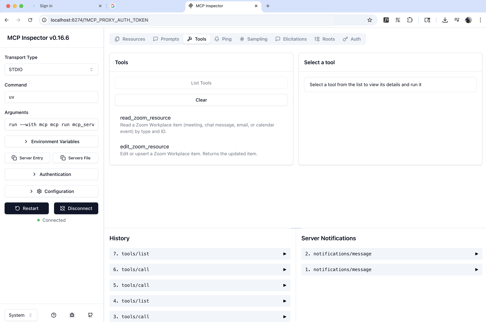

This codelab will walk you through integrating Zoom workplace data into an MCP server and building an MCP client using the Anthropic Python Model Context Protocol SDK.
The first tool reads oom Workplace Contextual data by resource and ID.
@mcp.tool(
"read_zoom_resource",
description="Read a Zoom Workplace item (meeting, chat message, email, or calendar event) by type and ID."
)
def read_zoom_resource(
resource_type: ResourceType = Field(
description="The Zoom dataset to read from. One of: 'meetings', 'team_chat', 'mail', 'calendar'."
),
resource_id: str = Field(
description="The ID of the item to read (e.g., meetingId, messageId, emailId, eventId)."
),
):
"""
Returns the stored dict for the requested Zoom Workplace item.
"""
_, item = _ensure_resource(resource_type, resource_id)
return item
The second tool performs simple find-and-replace operations on requested Zoom Workplace item:
@mcp.tool(
name="edit_document",
description="Edit a document by replacing a string in the documents content with a new string."
)
def edit_zoom_resource(
resource_type: ResourceType = Field(
description="The Zoom dataset to write to. One of: 'meetings', 'team_chat', 'mail', 'calendar'."
),
resource_id: str = Field(
description="The ID of the item to edit or create (e.g., meetingId, messageId, emailId, eventId)."
),
new_content: dict = Field(
description="The replacement content for this item. Entire object is replaced."
),
):
"""
Replaces the entire item content. For partial updates, add another tool that merges dicts.
"""
if resource_type not in zoom_data:
raise ValueError(f"Unknown resource_type '{resource_type}'. "
f"Use one of: meetings, team_chat, mail, calendar.")
collection = zoom_data[resource_type]
collection[resource_id] = new_content
return collection[resource_id]
Run the following command to lauch the Python MCP SDK includes a built-in browser-based inspector that lets you debug and test your server in real-time.
mcp dev server.py
This starts a development server and gives you a local URL, typically something like http://127.0.0.1:6274. Open this URL in your browser to access the MCP Inspector.
Navigate to the Tools section and click "List Tools" to see all available tools from your server. When you select a tool, the right panel shows its details and input fields.

The inspector shows both the success status and the actual returned data, making it easy to verify your tool works correctly.
You build MCP server that can access Zoom Workplace contextual data using the PYTHON SDK.